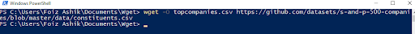

Intro
How do you use the programs and what are they for?
WGET is a simple command used on the terminal to collect files from the internet, mainly integrated within GNU/Linux operating systems. It works by making requests to the internet and pulls back requested items to be downloaded. This could be anything from a file, picture, or spreadsheet.
cURL (Client URL) which comes preinstalled on MacOS and Windows 10 works similarly to WGET in that it also pulls data off the internet.However, cURL is powered by the libcurl library to allow for upload/file transfers. cURL provides a generic, language-agnostic way to demonstrate HTTP requests and responses. Since each programming language has a different way of making web calls. Rather than show how to make web calls in Java, Python, C++, JavaScript, Ruby, and so on, you can just show the call using curl. Users can see the format of the request, including any headers and other parameters. Your users can translate this into the specific format for the language they’re using. While curl was made to transfer just the URLs that the user specifies, and does not contain any r WGET uses more common protocols such as HTTP, HTTPS, FTP and FTPS. While CURL allows for a much broader protocol coverage across the board. Another key difference is that due to the set focus of downloading for WGET, it comes with features to allow for a much easier download experience, such as resuming incomplete files, persistent connections, and NLS-based language support.
When would you use one or the other to download a CSV file?
Both programs can be utilized in different ways depending on the use-case of the CSV file. For example if the CSV file was used to track a company’s shipping address locations, a single file could contain thousands upon thousands of entries. If this file was needed to be shared to a server URL, you would be using CURL to upload and download different iterations of the file. It would allow you to upload and store your backup and retrieve it from the console with a script for easier data entry. If the file was already uploaded to the cloud or there multiple CSV files needed to be downloaded, WGET would be able to accommodate better due to its resume and multidownload features.
Breakdown of the essential flag options
| Wget | |
|---|---|
| -i | Includes the header info |
| -O | Downloads a file |
| -qc | Quit download with resuming if failed |
| -qcO | Same as -qc but with specified download location |
| -U | Download url using an agent provided |
| -p<dir><dir> | Downloads file from url to directory |
| -c | Continue aborted downloads |
| cURL | |
|---|---|
| -u | Connect to server using username and password |
| -i | Include protocol response headers in the output |
| -o | Output to a file named as the remote file |
| -O | Output to a file named as the remote file |
| -T | Transfer local file to destination |
| -x | Get file from a speficied proxy |
| -r 0-99 | Get the first 100 bytes |
| -v | Get verbose fetching |
| -c | Download cookies |
| -Y <#> -y <#> | Set speed limit on download |
| -m <#> -Y <#> -y <#> | Set overall time limit on download |
Using CURL
When you type an http address into a browser address bar, the server returns a response, and your browser converts the response to a more visual display. But you can also see the raw code by simply using the curl command in the command line:
curl https://example.com
Curl will retrieve the HTML code for the site example.com. The browser’s job is to make that code visually readable. curl shows you what you’re actually retrieving.
When you type an address into a website, you see only the body of the response. But actually, there’s more going on behind the scenes. When you make the request, you’re sending a request header that contains information about the request. The response also contains a response header.
For example, to see the response header in a curl request, include -i in the curl request:
curl http://example.com -i
SIDE NOTE:
REST APIs are basically request-and-response interactions between clients and servers made through a common HTTP web protocol. HTTP web protocols are language agnostic and therefore the same across different platforms and systems. When documenting a REST API, it doesn’t matter whether engineers build the API with Java, Ruby, Python, or some other language. The requests are made over HTTP, and the responses are returned through HTTP. Restapi_restapi.svg REST APIs can use any message format the API developers want to use, including XML, JSON, Atom, RSS, CSV, HTML, while Most REST APIs use JSON (JavaScript Object Notation) as the default message format. REST APIs focus on resources and ways to access the resources.
Wget/cURL on Windows
Installing Wget
Wget does not come included with windows so it needs to be downloaded.
Step 1:
Download the latest version based on your OS from https://eternallybored.org/misc/wget/

Step 2:
Move the exe file to any desirable folder

Step 3:
Shift right click anywhere in the folder and click "Open powershell windows here". It may be command prompt depending on your setup

Step 4:
Now you can run any Wget commands to download file, I am using the -O flag for outpu

Wget can also be added to PATH under windows environment variable which will allow you to run these commands from anywhere in the computer
wget -O file.csv https://examplesite.com/file.csv

Using cURL
cUrl now comes standard with all new windows versions after 1803. You can run curl commands using the powershell
Step 1: Open Powershell or CMD
Step 2: Run the commands
curl.exe -o file.csv https://examplesite.com/file.csv
Mac OS
Wget
There are 2 ways to install wget: via Xcode or via Homebrew.
In this tutorial I will cover downloading WGET using Homebrew.
Step 1: Install Homebrew on command line using a script
# /bin/bash -c "$(curl -fsSL https://raw.githubusercontent.com/Homebrew/install/master/install.sh)"
Step 2: Install the wget command line client
# brew install wget
Step 3: Run the commands
# wget -O file.csv https://testsite.com/bigdata.csv
cURL
Like windows, cURL is already integrated into Mac OS.
Step 1: Open Terminal
Step 2: Run the commands
curl https://example.com -I
Linux
Unlike Windows, both wget and cURL are integrated in every linux system
$ curl -O https://testsite.com/bigdata.csv
$ wget https://testsite.com/bigdata.csv
Speed Test: wget vs. cURL
To test which program is faster in downloading, we gave each a large test file from https://www.thinkbroadband.com/download